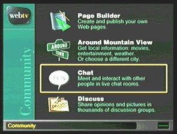
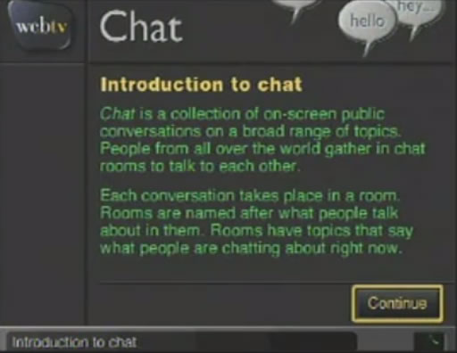
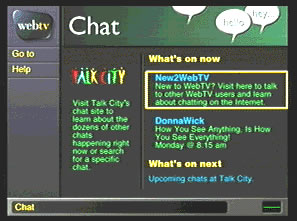
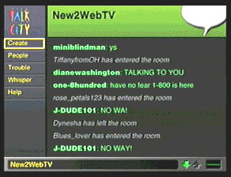

Talk City was a well-known chat service in the 90s. It was integrated seamlessly with the UI of WebTV, so well that it wasn't clear if WebTV themselves were offering the service. When entering WebTV's "chat" section, the picture one would see is to the right. The "New2WebTV" channel was the first chat channel I participated in.




There was a "for kids" chat room called "Kidz Korner" which had strict rules and moderators. There were many chatrooms ranging from general topics to 18+, and they were all very active.